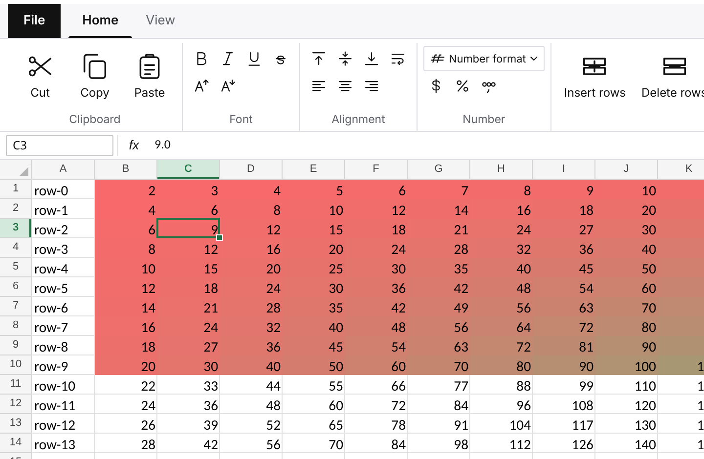
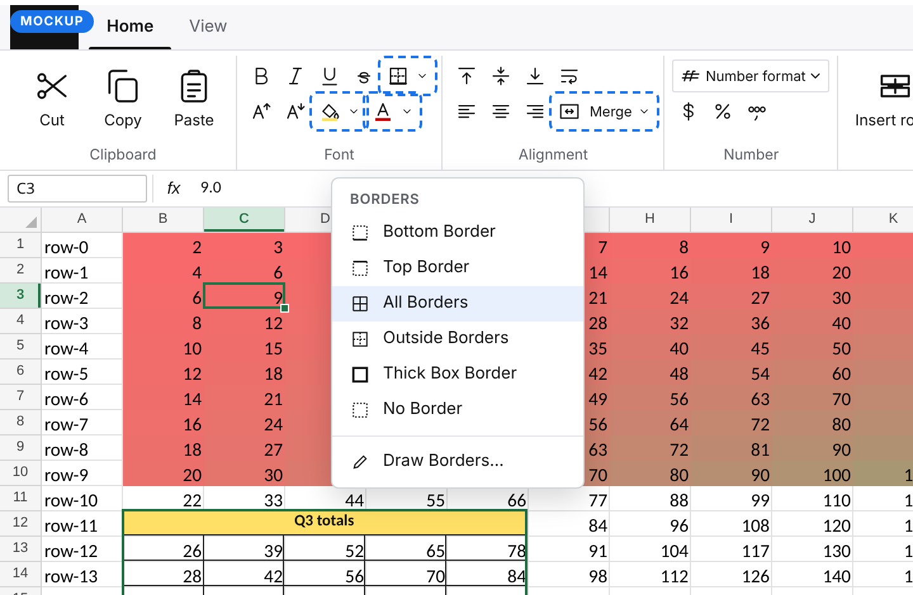
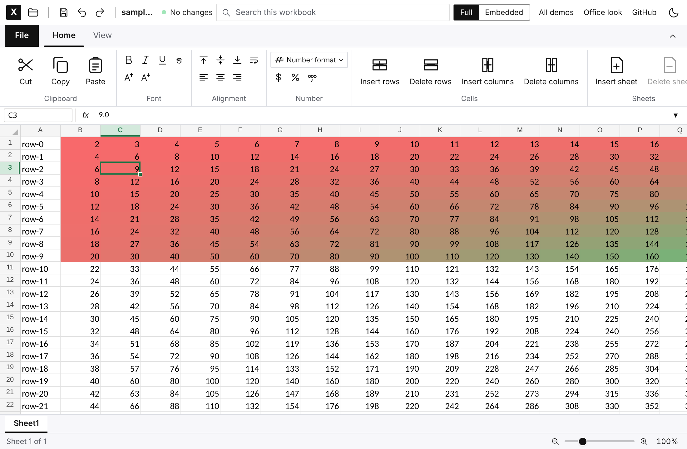
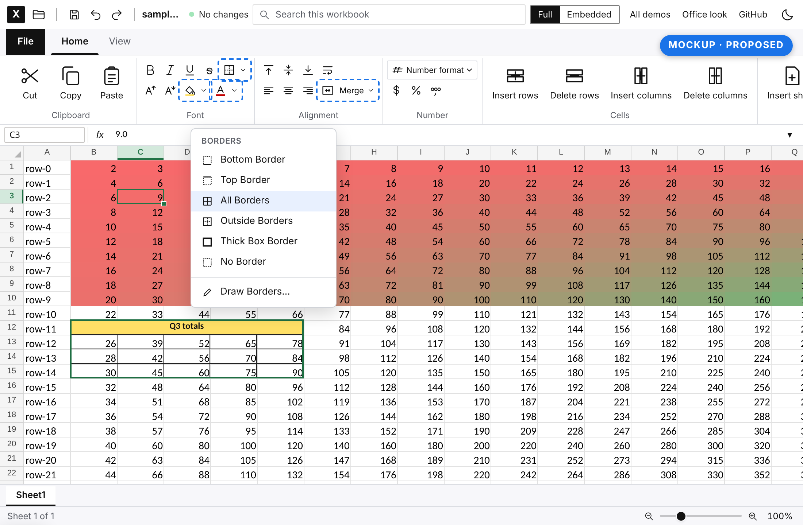

Colour cells, add borders and Merge & Center from Excel's Home tab
Building: nightly session started 2026-11-23 about 5 AM ET on branch nightly/2026-11-23-xlsx-cell-format; a draft PR opens when it finishes.
Approve: tap 👍 on the issue · Decline: tap 👎
Close-up of the change




Full screen


Today: Excel Home > Font has Bold, Italic, Underline, Strikethrough and font size only. There is no Borders, Fill Color or Font Color, and Alignment has no Merge & Center, so you can't format a simple table.


Mockup: Borders, Fill Color and Font Color split buttons join the two-row Font group, and Merge & Center joins Alignment. The Borders menu is open; B12:F15 shows a merged, filled title row and All Borders.
Tap an image to open it full size.
Why
Borders, fill colour, font colour and Merge & Center are the most-used buttons on Excel's Home tab, and Google Sheets, OnlyOffice and Collabora all put them in the same place. Nitro already paints fills, borders and merged cells that arrive in a file, the style writer already pools fills and borders, and the command ids (home.borders, home.fill-color, home.font-color, home.merge-center) are registered. But none of them are on the ribbon or wired to an edit, so you can't turn a range of numbers into a readable table.
Definition of done
- Home > Font gains Borders, Fill Color and Font Color split buttons (last-used colour on the face, palette with theme and standard colours plus No Fill / Automatic); the Font group stays at two rows.
- Borders menu offers Bottom, Top, Left, Right, No Border, All Borders, Outside Borders and Thick Box Border; each applies to the selection as one undo step.
- Home > Alignment gains Merge & Center with Merge Across, Merge Cells and Unmerge Cells; merging over data keeps the top-left value and warns first, as Excel does.
- Saved files reopen in Excel and LibreOffice without repair, with fills, borders, font colours and merges intact; repeated formatting reuses existing styles.xml entries (validator + round-trip in CI).
- Playwright tests cover each border type, fill, font colour, merge/unmerge, undo and a save round-trip; bundle-budget and all required checks green; no first-load size limit raised.
Approve: tap 👍 on the issue · Decline: tap 👎